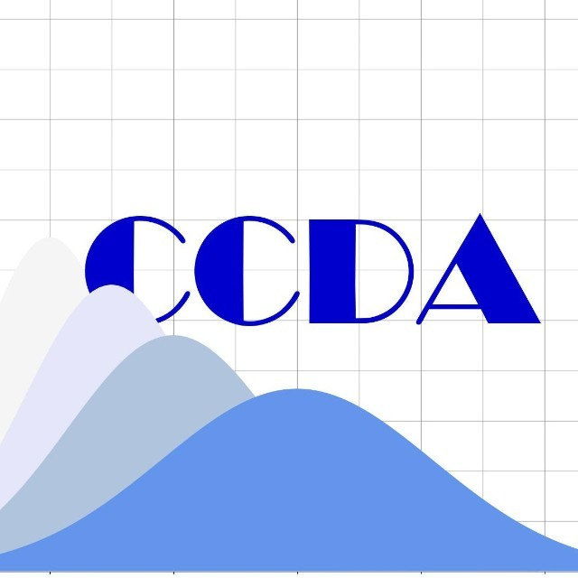
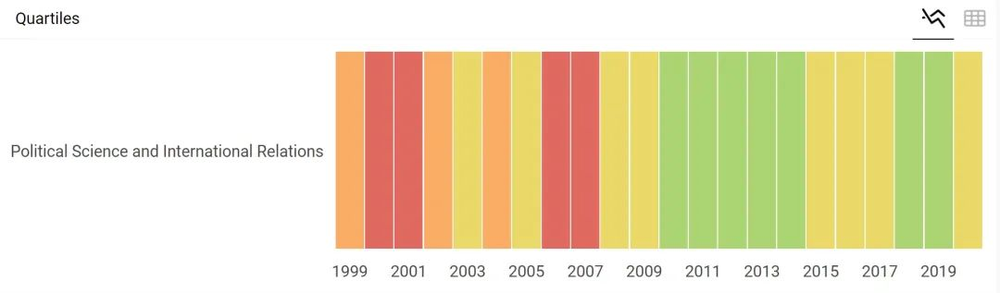
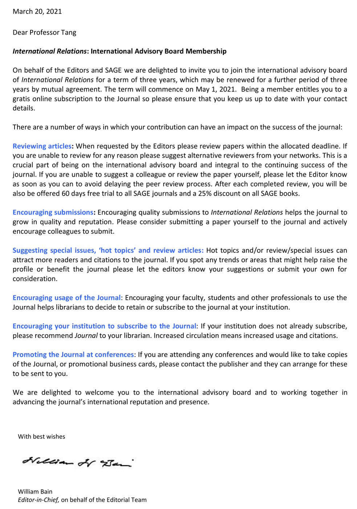
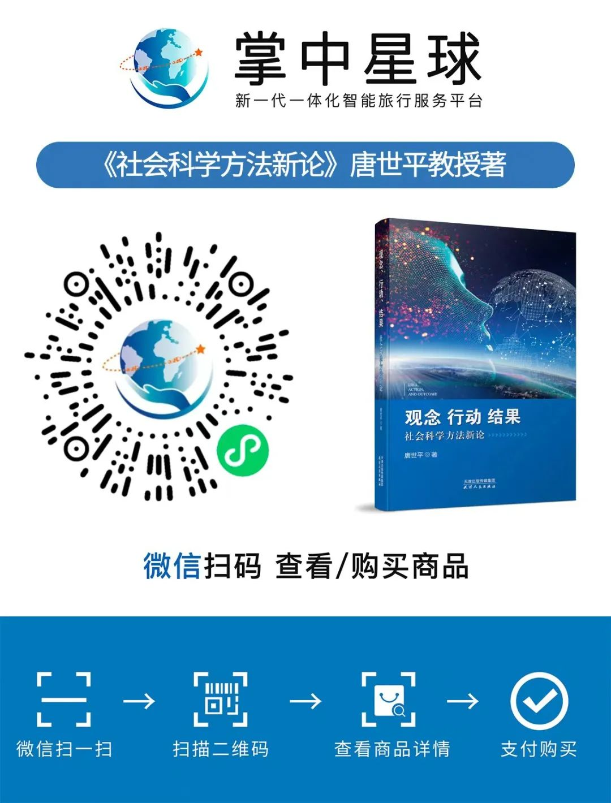

收录于合集
以下文章来源于复旦复杂决策分析中心 ，作者复旦复杂决策中心
 复旦复杂决策分析中心 .
复旦大学复杂决策分析中心旨在建立起一套基于广泛而丰富的历史经验和科学方法的分析框架、模型和工作软件，将前沿的社会科学研究方法与实际的学术与政策研究结合起。中心立足上海、观察世界、心怀中国，力争成为中国智库的重要“技术支持中心”之一。
应 International Relations （《国际关系》,简称 IR）编辑委员会以及主编 William Bain 教授邀请，自2021年5月起， 复旦大学“复杂决策分析中心”主任唐世平教授正式成为该杂志的编委会成员，同时也是第一位来自中国的编委会成员。
International Relations 由SAGE出版，是国际政治领域一流的综合性杂志。期刊主要发表与国际关系相关的：法律、经济、伦理、战略、哲学、文化、环境等方面的研究。 据 Journal Citation Reports（JCR）统计，2019年该杂志影响因子为1.250。根据SCImago Journal Rank（SJR）的分区排名， 2020年 其为政治学与国际关系领域二区。 IR编委会成员均为国际关系领域的知名学者。
 IR近20年SJR分区（绿色为一区，黄色为二区）
本月初，唐世平教授刚刚受邀成为国际关系领域顶级刊物 International Security （2021-）的编委会成员。此次，唐世平教授再度入选SSCI一流期刊IR编委会。同时，他还是 Chinese Journal of International Politics 的编委会成员 （2020-）, 国际研究协会（ISA）旗下的旗舰刊物 International Studies Quarterly 的编委会成员（2015-2020），以及国际安全领域的一流杂志 Security Studies 的编委会成员（2015-）。同时成为多家国际关系领域顶级与一流刊物的编委，高度体现了国际学界对唐世平教授在国际关系理论以及国际安全与战略的卓越建树的认可。
 William Bain教授致唐世平教授的邀请函
唐世平教授是当今最具国际影响力的中国社会科学家之一，也是当今亚洲最优秀的社会科学家之一。他在国际政治、比较政治与政治理论、制度经济学、社会科学哲学、计算社会科学领域有着广泛丰硕的成果。迄今为止，他已出版英文专著四部、两部中文专著、一部英文编著和三部中文编著。
其中，他的Social Evolution of International Politics （《国际政治的社会演化》）（牛津大学出版社，2013年）于2015年获得国际研究协会（ISA）的“年度最佳著作奖”。他的另外三部英文专著是：On Social Evolution: Phenomenon and Paradigm （《论社会演化：现象与范式》），A General Theory of Institutional Change（《制度变迁的广义理论》）和 A Theory of Security Strategy for Our Time: Defensive Realism （《我们时代的安全战略理论：防御性现实主义》）。此外，他还有多篇研究论文发表在相关领域的重要和顶级国际期刊上。很多时候，他都是在这些刊物上发表文章的第一位中国学者。
唐世平教授的下一部英文专著 The Institutional Foundation of Economic Growth（《经济发展的制度基础》）也将由一家世界顶级的大学出版社出版 。【敬请期待！】
International Relations 编委员会委员的名单，见：https://journals.sagepub.com/editorial- board/ire
欲知唐世平教授如何能博采众长，纵横学术江湖，不妨看看他是如何“以众人为师”，领悟不同学者的风格，之后融会贯通《众人皆吾师》，以及他独特的方法论思考《社会科学方法新论》。

文章观点不代表本平台观点，本平台评译分享的文章均出于专业学习之用, 不以任何盈利为目的，内容主要呈现对原文的介绍，原文内容请通过各高校购买的数据库自行下载。
好好学习，天天“在看”